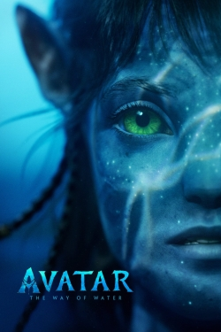
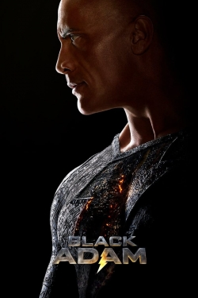

Avatar: The Way of Water
Avatar: The Way of Water (also known as Avatar 2) is an upcoming American epic science-fiction film directed by James Cameron and produced by 20th Century Studios.[2] It is the second film in Cameron's Avatar franchise, following Avatar (2009). Cameron is producing the film with Jon Landau, with Josh Friedman originally announced as Cameron's co-writer; it was later announced that Cameron, Friedman, Rick Jaffa, Amanda Silver, and Shane Salerno took a part in the writing process of all sequels before being attributed separate scripts, making the eventual writing credits unclear.[3][4][5][6] Cast members Sam Worthington, Zoe Saldaña, Stephen Lang, Joel David Moore, CCH Pounder, Giovanni Ribisi, and Matt Gerald reprise their roles from the original film, with Sigourney Weaver returning in a different role.[7] New cast members include Kate Winslet, Cliff Curtis, Edie Falco, Jemaine Clement, Michelle Yeoh, and Vin Diesel. Cameron, who had stated in 2006 that he would like to make sequels to Avatar if it was successful, announced the first two sequels in 2010 following the widespread success of the first film, with The Way of Water aiming for a 2014 release.[8][9] However, the addition of three more sequels (to the first one) and the necessity to develop new technology in order to film performance capture scenes underwater, a feat never accomplished before, led to significant delays to allow the crew more time to work on the writing, preproduction, and visual effects.[10] Preliminary shooting for the film started in Manhattan Beach, California, on August 15, 2017, followed by principal photography simultaneously with Avatar 3 in New Zealand on September 25, 2017; filming concluded in late September 2020, after over three years of shooting, despite production being interrupted due to the COVID-19 pandemic. The film's theatrical release has been subject to repeated delays, with the latest occurring on July 23, 2020.[11] It is currently planned for a release on December 16, 2022, with the following three sequels to be released, respectively, on December 20, 2024, December 18, 2026, and December 22, 2028.
Black Adam
Black Adam is an upcoming American superhero film based on the DC Comics character of the same name. Produced by New Line Cinema, DC Films, Seven Bucks Productions, and FlynnPictureCo., and set for distribution by Warner Bros. Pictures, it is intended to be a spin-off from Shazam! (2019) and the 11th film in the DC Extended Universe (DCEU). Directed by Jaume Collet-Serra and written by Adam Sztykiel, Rory Haines, and Sohrab Noshirvani, the film stars Dwayne Johnson as Teth-Adam / Black Adam alongside Aldis Hodge, Noah Centineo, Sarah Shahi, Marwan Kenzari, Quintessa Swindell, Bodhi Sabongui, and Pierce Brosnan. Johnson was attached to Shazam! early in development and confirmed that he would portray the villain Black Adam in September 2014. The producers decided to give the character his own film in January 2017, and Sztykiel was hired that October. Collet-Serra joined in June 2019 for a planned release date of December 2021, but this timeline was delayed by the COVID-19 pandemic. Additional casting took place over the next year, including for members of the Justice Society of America (JSA), and the script was rewritten by Haines and Noshirvani. Filming took place from April to August 2021 at Trilith Studios in Atlanta, Georgia, and also in Los Angeles.